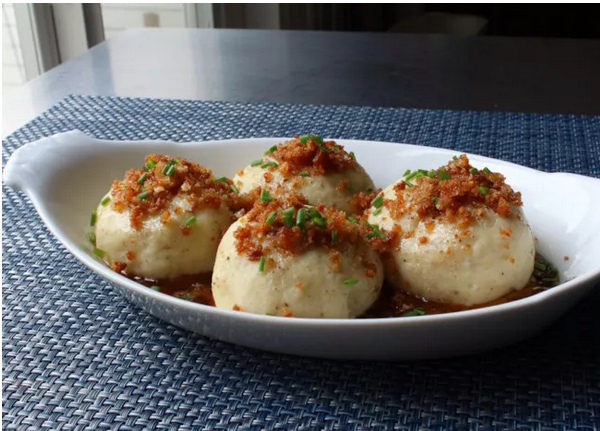

German Potato

Description
These German potato dumplings are the latest import to my potato-side dish collection. They're drizzled in browned butter and topped with crunchy croutons, but they're also good topped with bacon, sautéed onions, and mushroom sauce. If you have time, roast the potatoes (instead of boiling them) so they're nice and dry. I like to serve them with sausage and red cabbage.
Ingredients
- 1 ½ pounds russet potatoes
- 1 stick unsalted butter
- 2 cups fresh bread cubes
- 1 pinch freshly grated nutmeg, or to taste
- 1 pinch cayenne pepper, or to taste
- salt and freshly ground black pepper to taste
- 2 large eggs
- 1 cup all-purpose flour
- 1 tablespoon snipped fresh chives, or to taste
Steps
- Place potatoes in a large pot and cover with salted water; bring to a boil. Reduce the heat to medium-low and simmer until just tender, 15 to 20 minutes. Drain and let cool until easily handled.
- While the potatoes are cooling, melt butter in a skillet over medium heat. Add bread cubes; cook and stir until golden brown and crunchy, 4 to 5 minutes. Remove from the heat and use a slotted spoon to transfer croutons to a bowl. Reserve browned butter in the pan.
- Peel potatoes and place into a large bowl. Mash and season with nutmeg, cayenne, salt, and pepper. Add eggs and mash until combined. Stir in flour just until incorporated; do not overmix.
- Bring a pot of salted water to a simmer. Dampen your hands with water and scoop a spoonful of dough onto your palm. Shape dough into a circle, make a light indentation in the center, and place 2 or 3 croutons inside. Pull dough around croutons to seal and roll into a smooth ball. Repeat to make seven more dumplings.
- Use a large spoon to lower dumplings, one at a time, into the simmering water. Cook until they float to the top, 1 to 2 minutes. Cover and simmer over medium-low heat for 10 minutes. Flip dumplings and continue to cook until puffed and cooked through, about 10 minutes more.
- Transfer dumplings to a serving plate and drizzle with reserved browned butter. Crumble remaining croutons over top and garnish with chives. Let dumplings firm up slightly before serving, about 10 minutes.